Soutenance de stage de Master 2
Encadrants :
Can Selçuk · Georges Halim Atallah
Laboratoire Modélisation et Simulation Multi Echelle (MSME)
2026-09-17
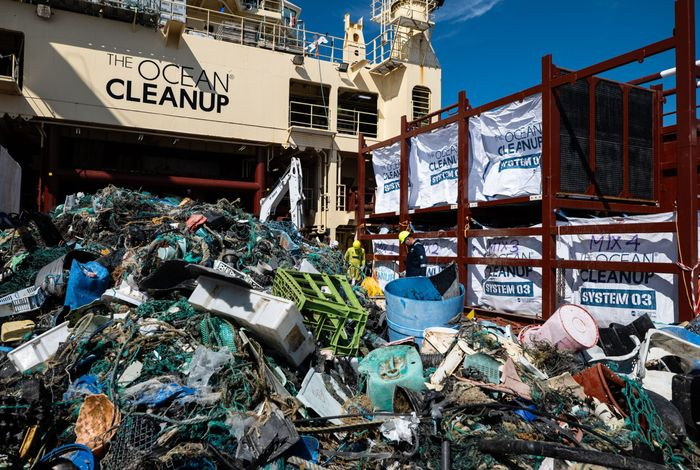
Déchets plastiques collectés par The Ocean Cleanup lors d’une extraction.
Depuis les années 1950, la production mondiale de plastique ne cesse d’augmenter.
4–12 millions de tonnes de déchets plastiques atteignent les océans chaque année.
Cette pollution menace la faune et les écosystèmes marins.
→ Comprendre et limiter le transport des déchets plastiques est un enjeu majeur.
L’ONG The Ocean Cleanup développe des dispositifs permettant de collecter les déchets plastiques.
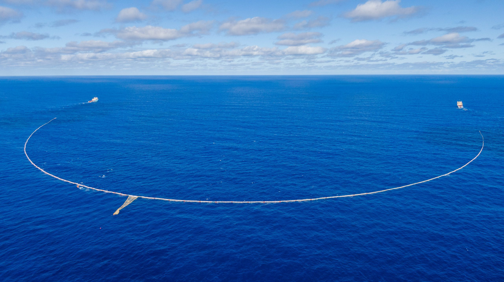
Barrière flottante en forme de U, déployée en océan
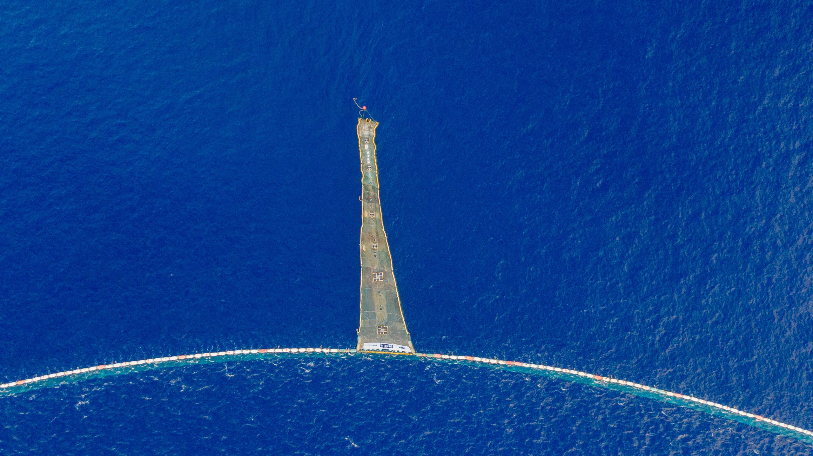
Zone de rétention des plastiques
Performance maximale rapportée : 75kg/h en 2023 —– Plastique extrait en 2024 : 143 993 kg
→ Des solutions permettent de collecter les plastiques à grande échelle.
Sources : The Ocean Cleanup
Les déchets flottants sont soumis simultanément à plusieurs
phénomènes environnementaux :
Courants marins
Vent
Marées
Vagues
→ Prédiction des trajectoires très complexe
→ Pour améliorer la collecte, il est nécessaire de mieux comprendre le transport des plastiques.
→ On s’intéresse à l’influence des vagues sur ce transport.
Une vague progressive génère un mouvement orbital des particules fluides.
Une vague de Stokes est non linéaire, le mouvement orbital est asymétrique. La trajectoire n’est pas parfaitement fermée
→ La particule présente un déplacement net dans la direction de propagation de la vague.
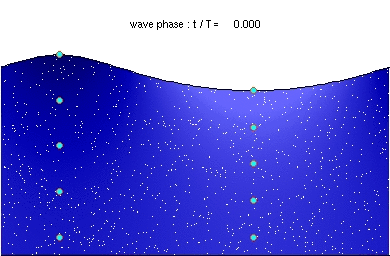
Déplacement net de particules dans une vague de Stokes
→ Ce déplacement net est appelé dérive de Stokes.
Vidéo prise de : Wikipedia contributors (2026)
Objectif : étudier et quantifier la dérive de Stokes d’un objet flottant (taille finie) en interaction avec une vague de Stokes.
1. Étude préliminaire : prise en main du code de calcul
Diphasique (eau / solide)
2. Paramétrage et validation du solveur
Triphasique (air / eau / solide)
3. Implémentation et validation d'une vague de Stokes
Diphasique (eau / air)
4. Quantification de la dérive de Stokes de l'objet
Triphasique (air / eau / solide)
\[ \nabla\cdot \mathbf{u} =0 \quad \forall \mathbf{x} \in \Omega_{\text{tot}}\] \[ {\color{red}{\rho_{\text{eff}}}} \left( \frac{\partial \mathbf{u}}{\partial t} + \mathbf{u} \cdot \nabla \mathbf{u} \right) = -\nabla p + \nabla \cdot \left[ {\color{red}{\mu_{\text{eff}}}} (\nabla \mathbf{u} + \left(\nabla \mathbf{u}\right)^T) \right] + {\color{red}{\rho_{\text{eff}}}} \mathbf{g} \quad \forall \mathbf{x} \in \Omega_{\text{tot}} \] \[ \mathbf{u} = \mathbf{U} + \boldsymbol{\omega} \times \mathbf{OM} \quad \forall \mathbf{x} \in \Omega_p \]
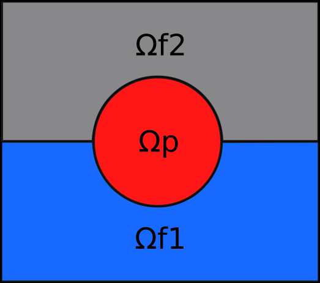
Représentation de \(\Omega_{\text{tot}}\)
\[ C_1 = \begin{cases} 1 & \text{dans l'eau} \\ 0<C_1<1 & \text{à l'interface} \\ 0 & \text{ailleurs} \end{cases} \qquad \text{et}\qquad C_2 = \begin{cases} 1 & \text{dans le solide} \\ 0<C_2<1 & \text{à l'interface} \\ 0 & \text{ailleurs} \end{cases} \]
\[ \frac{\partial C_1}{\partial t} + \mathbf{u} \cdot \nabla C_1 = 0 \qquad \frac{\partial C_2}{\partial t} + \mathbf{u} \cdot \nabla C_2 = 0 \]
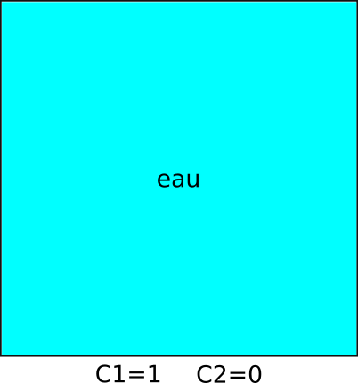
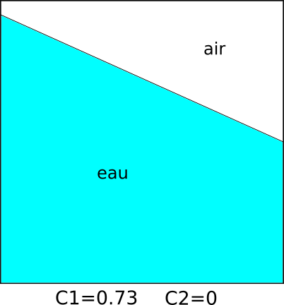
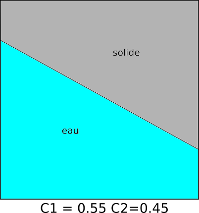
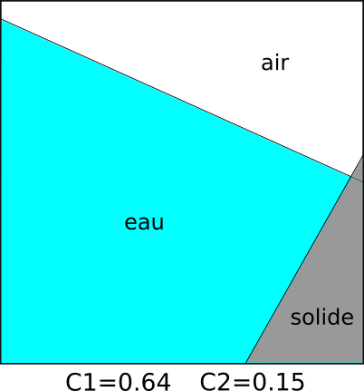
Loi arithmétique pour la densité effective : \[ {\color{red}{\rho_{\text{eff}}}} = (1-C_1-C_2)\rho_{\text{air}} + C_1 \rho_{\text{eau}} + C_2 \rho_{\text{solide}} \]
Plusieurs lois de mélange testés pour la viscosité effective :
Loi arithmétique : \[ {\color{red}{\mu_{\text{eff}}}} = (1-C_1-C_2)\mu_{\text{air}} + C_1 \mu_{\text{eau}} + C_2 \mu_{\text{solide}} \]
Loi harmonique : \[ {\color{red}{\mu_{\text{eff}}}} = \frac{\mu_{\text{air}} \mu_{\text{eau}} \mu_{solide}}{(1-C_1-C_2)\mu_{\text{eau}} \mu_{\text{solide}} + C_1 \mu_{\text{air}}\mu_{\text{solide}} + C_2 \mu_{\text{air}} \mu_{\text{eau}}} \] Loi géométrique : \[ {\color{red}{\mu_{\text{eff}}}} = \mu_{\text{air}}^{(1-C_1-C_2)} \mu_{\text{eau}}^{C_1} \mu_{\text{solide}}^{C_2} \]
Dans la région solide on résout :
\[ {\color{blue}{\rho_{\text{solide}}}} \left( \frac{\partial \mathbf{u}}{\partial t} + \mathbf{u} \cdot \nabla \mathbf{u} \right) = -\nabla p + \nabla \cdot \left[ {\color{blue}{\mu_{\text{solide}}}} (\nabla \mathbf{u} + (\nabla \mathbf{u})^T) \right] + {\color{blue}{\rho_{\text{solide}}}} \mathbf{g} \]
\[\nabla \cdot [\underline{\underline{\mathbf{D}}}(u)]=0\]
\[ \underline{\underline{\mathbf{D}}}(u)=0 \]
\[ \mathbf{u} = \mathbf{U} + \boldsymbol{\omega} \times \mathbf{OM} \]
Développé par l’équipe TCM du laboratoire MSME
Basé sur la méthode des volumes finis et sur la résolution des équations de Navier-Stokes
Ecrit en Fortran 90
Parallélisé avec MPI pour le calcul haute performance (HPC)
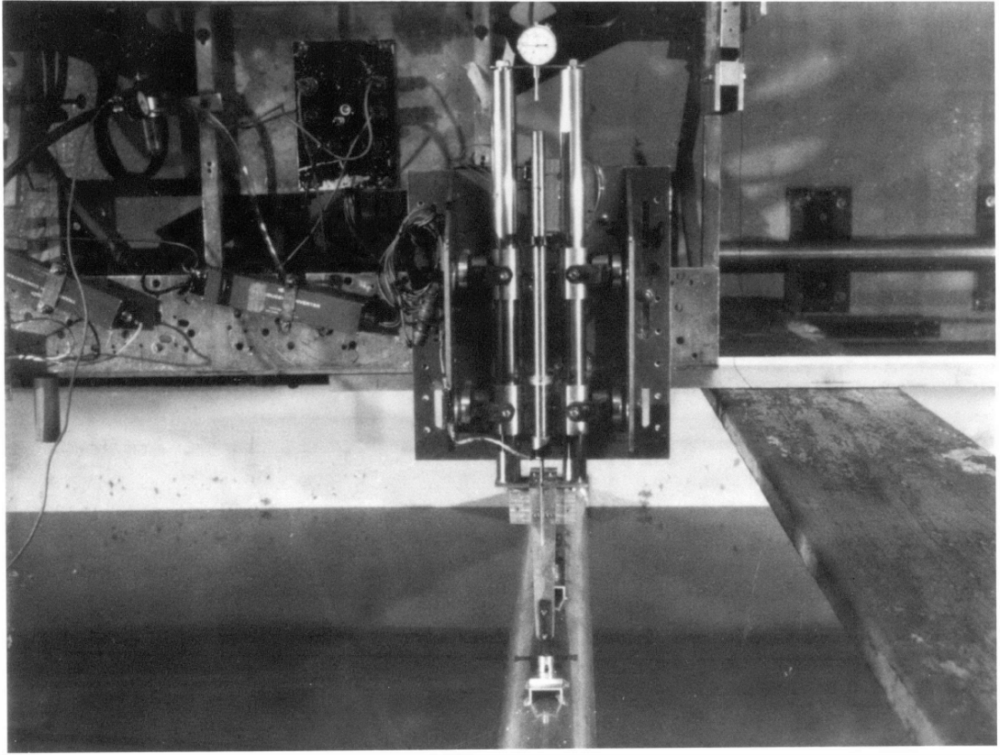
| Paramètre | Valeur |
|---|---|
| Diamètre du cylindre (D) | 0.1524 m |
| Longueur du bassin | 27.432 m (180 D) |
| Longueur du cylindre | 2.5908 m (17 D) |
| Hauteur du bassin | 1.22 m |
| Déplacement initial \(h_1\) | 0.0254 m (0.16 D) |
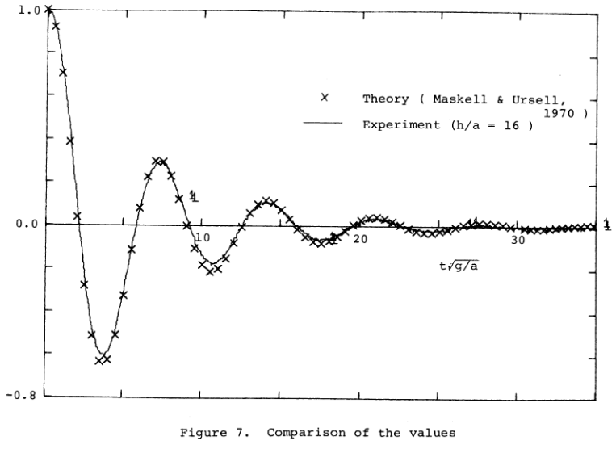
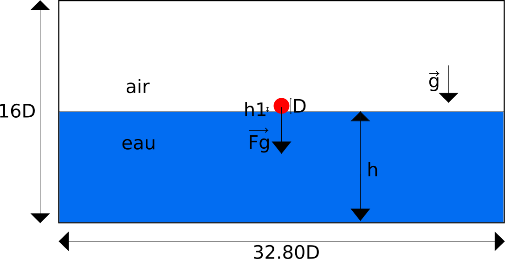
Théorie des ondes (validité des résultats) :
\[ c=\sqrt{gd} = 3.46 \; \text{m/s} \] \[ t_{valide}=\frac{L}{\sqrt{gd}}=\frac{32.80D}{\sqrt{gd}} = 1.44 \; s \]
3 paramètres à étudier :
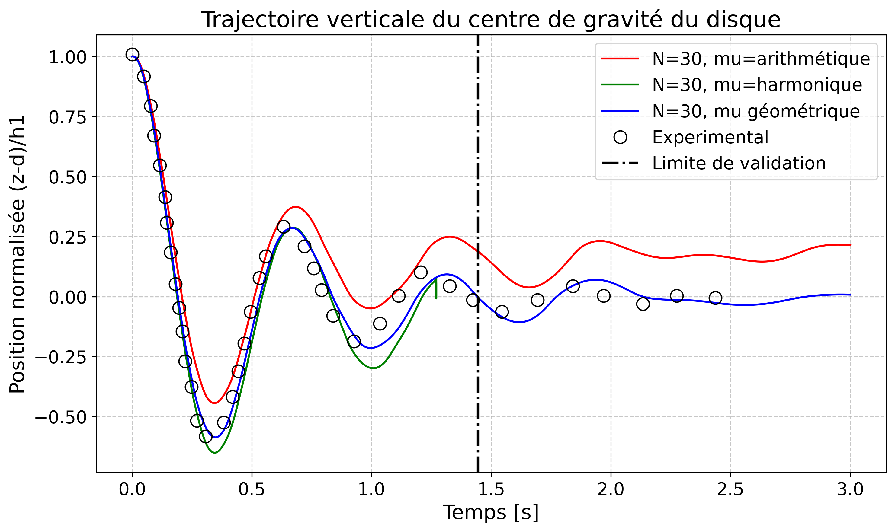
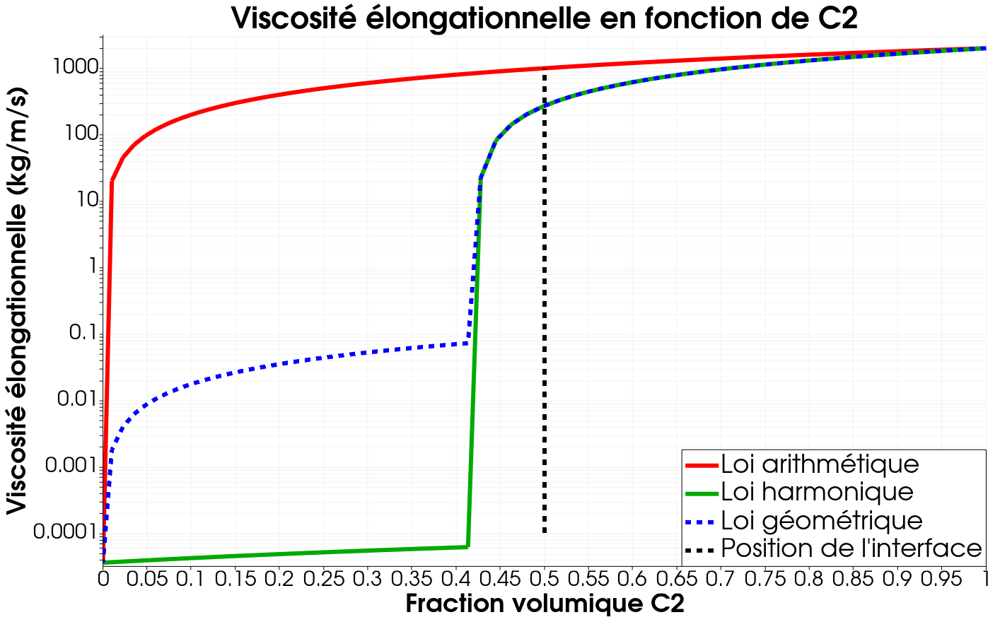
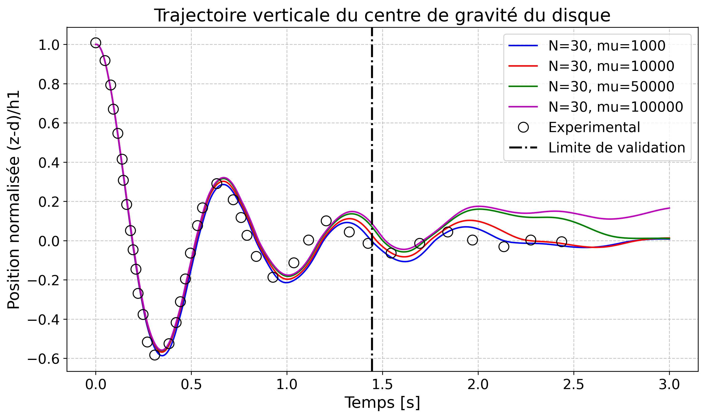
\[ \scriptsize \text{Erreur : } \alpha = \vert h_{2\text{ref}}-h_{2\text{num}}\vert \qquad \text{Norme } L_p \text{ de l'erreur } \alpha : \Vert \alpha \Vert_p = \left( \frac{1}{t_{\text{valide}}}\int_0^{t_{\text{valide}}} \alpha (t)^p\,dt \right)^{\frac{1}{p}} \qquad \text{Norme } L_\infty \text{ de l'erreur } : \Vert \alpha \Vert_\infty = \text{sup}(\alpha) \]
\[ \scriptsize \text{On trace :} \frac{\Vert \alpha \Vert_1}{\Vert h_{2\text{ref}} \Vert_1}, \; \frac{\Vert \alpha \Vert_2}{\Vert h_{2\text{ref}} \Vert_2} \; \text{et} \; \frac{\Vert \alpha \Vert_\infty}{\Vert h_{2\text{ref}} \Vert_\infty} \text{ en fonction de } \mu_{\text{solide}} \; \text{pour} \; t \in [0,t_{\text{valide}}] \]
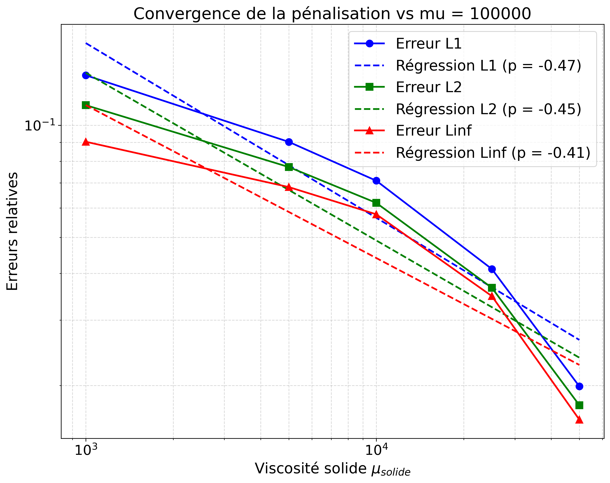
| \(\mu_\text{solide}\) | Erreur relative \(L_1\) (%) | Erreur relative \(L_2\) (%) | Erreur relative \(L_\infty\) (%) |
|---|---|---|---|
| 1000 | 13,6 | 11,3 | 9,1 |
| 5000 | 9,0 | 7,7 | 6,8 |
| 10000 | 7,1 | 6,2 | 5,7 |
| 25000 | 4,1 | 3,6 | 3,5 |
| 50000 | 2,0 | 1,7 | 1,6 |
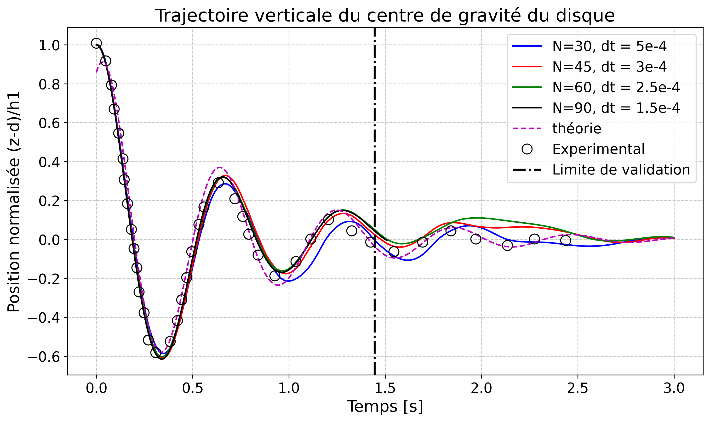
\[ \scriptsize \text{Erreur : } \alpha = \vert h_{2\text{Richardson}}-h_{2\text{num}}\vert \qquad \text{On trace :} \frac{\Vert \alpha \Vert_1}{\Vert h_{2\text{Richardson}} \Vert_1}, \; \frac{\Vert \alpha \Vert_2}{\Vert h_{2\text{Richardson}} \Vert_2} \; \text{et} \; \frac{\Vert \alpha \Vert_\infty}{\Vert h_{2\text{Richardson}} \Vert_\infty} \text{ en fonction de } \Delta x \; \text{pour} \; t \in [0,t_{\text{valide}}] \]
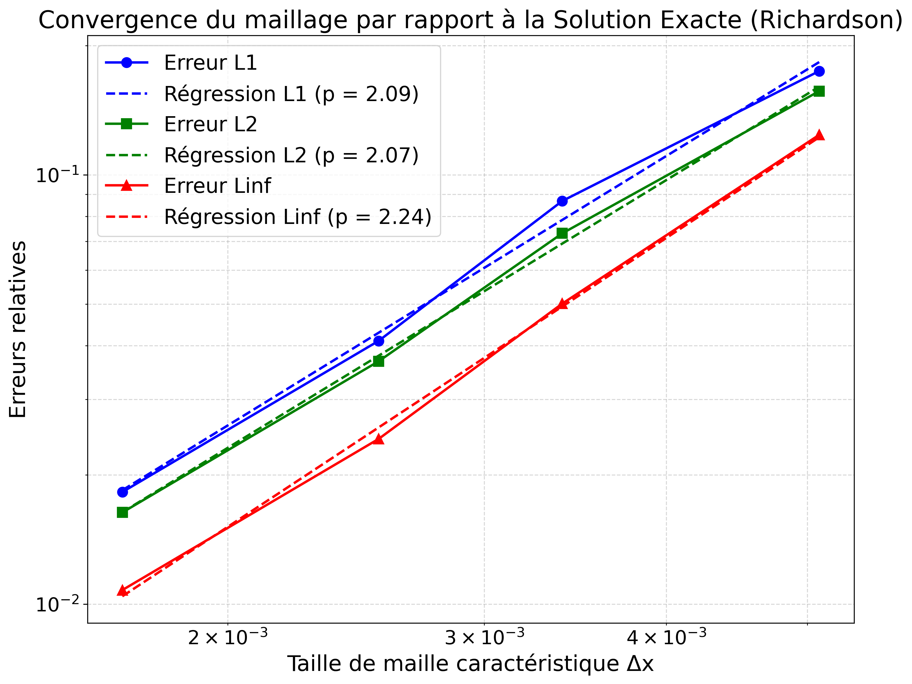
| Mailles / diamètre | Erreur relative \(L_1\) (%) | Erreur relative \(L_2\) (%) | Erreur relative \(L_\infty\) (%) |
|---|---|---|---|
| 30 | 17,45 | 15,66 | 12,39 |
| 45 | 8,69 | 7,30 | 5,01 |
| 60 | 4,10 | 3,68 | 2,42 |
| 90 | 1,82 | 1,63 | 1,08 |
\[T= \frac{2\pi}{\omega} = \frac{2\pi}{\sqrt{gk\left[1+(ka)^2\right]}}\]
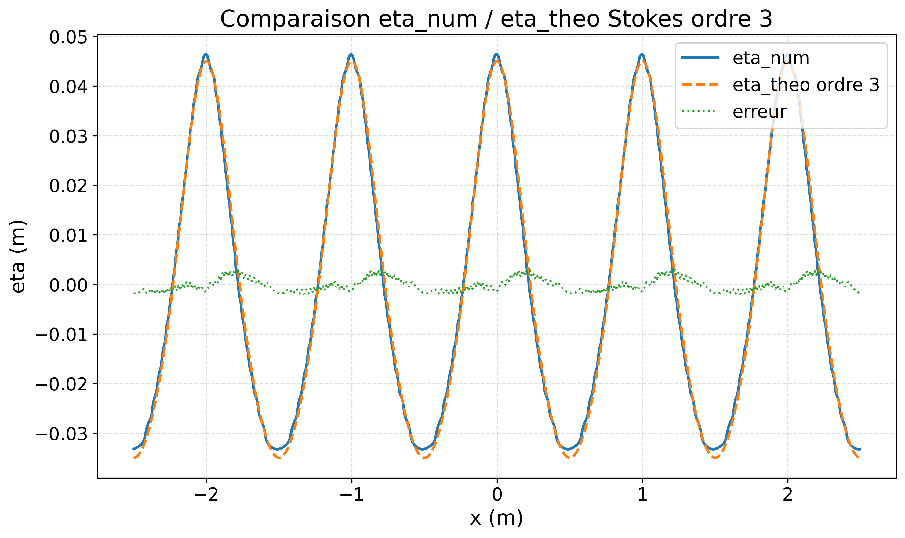
\[Re_\lambda=\frac{\lambda \sqrt{g\lambda}}{\nu_f} \sim 3 \times 10^6\]
| Mailles / Hauteur de vague | Erreur relative \(L_1\) (%) | Erreur relative \(L_2\) (%) | Erreur relative \(L_\infty\) (%) | ||
|---|---|---|---|---|---|
| 8 | 10,5 | 11 | 14 | ||
| 16 | 4,6 | 4,8 | 6,5 | ||
| 24 | 2,21 | 2,37 | 3,69 | ||
| 32 | 2,27 | 2,4 | 3,15 | ||
| 40 | 1,77 | 2,0 | 2,98 | ||
| 48 | 1,8 | 1,95 | 2,66 | ||
| 64 | 1,69 | 1,85 | 2,44 |
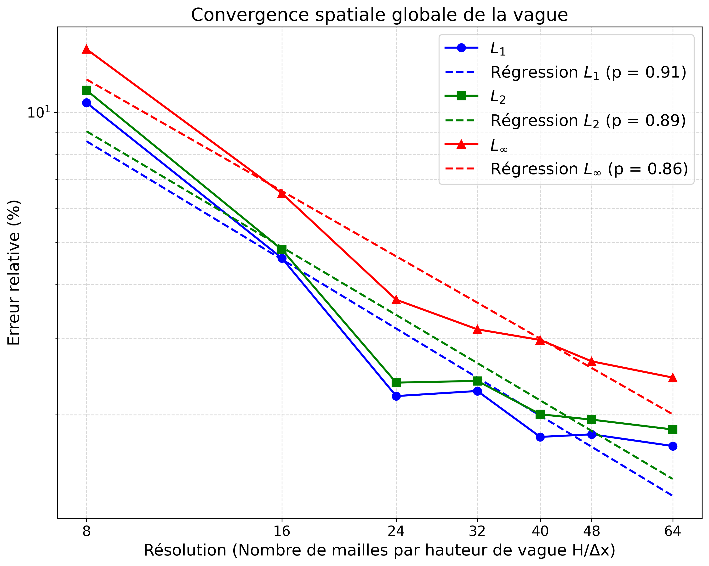
1. Théorie : particule fluide (sans masse)
Dérive de Stokes théorique
\[ U_{S, \text{theo}} = a^2 k \omega \frac{\cosh[2 k(z_0+h)]}{2 \sinh^2(k h)} \]
Limite en eau profonde : \(U_{S, \text{theo}} = a^2 k \omega \exp(2 k z_0)\)
2. Pratique : objet flottant (masse et taille finie)
Dérive de Stokes de l’objet
\[ U_{S,O} = \overline{U_{L,O}} - \overline{U_E} \]
\(\overline{U_{L,O}}\) : vitesse lagrangienne moyenne de l’objet
\(\overline{U_E}\) : vitesse eulérienne moyenne du courant de fond
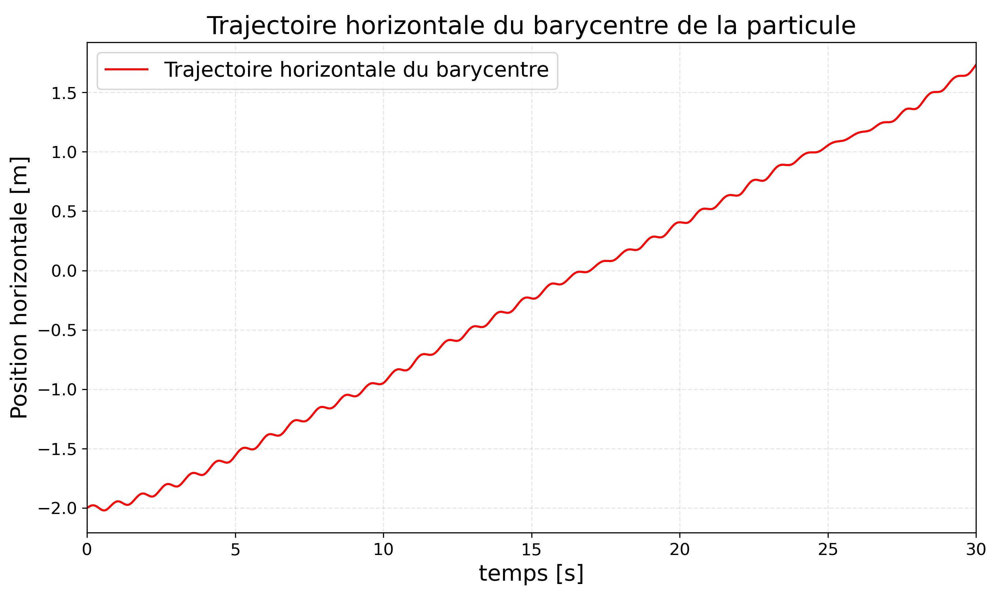
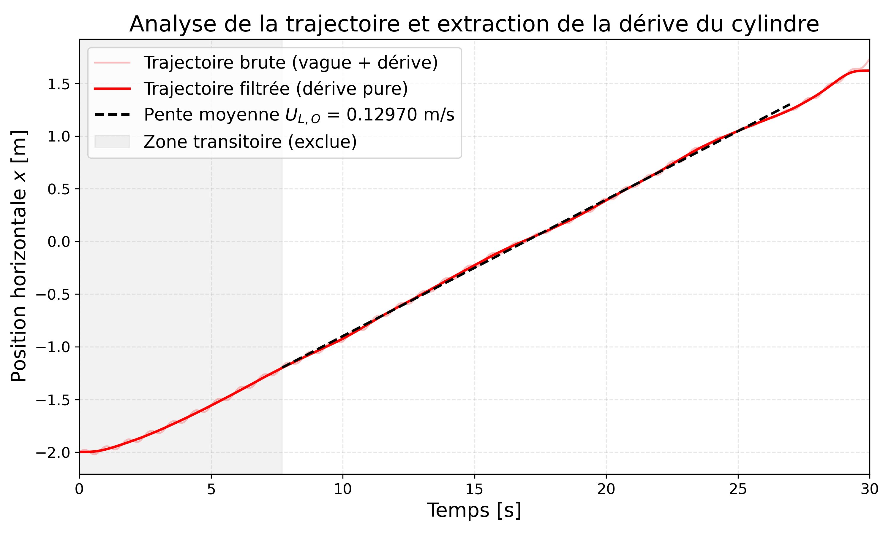
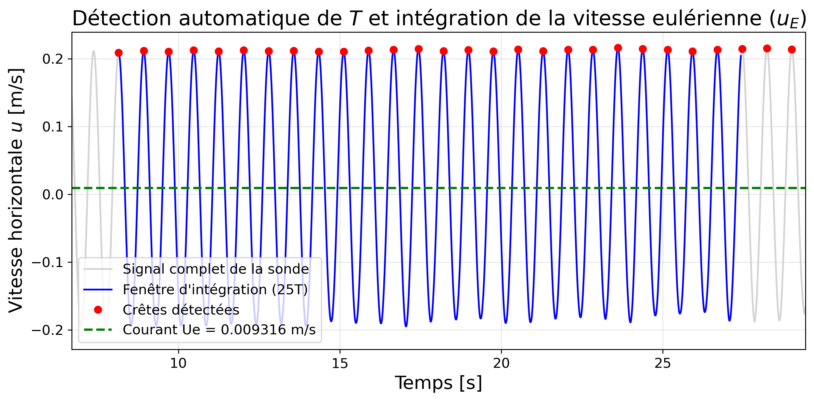
Comparaison : facteur d’amplification \(\chi\)
\[ \chi = \frac{\color{red}{U_{S,O}}}{\color{blue}{U_{S, \text{theo}}}} \]
Quantifie l’écart entre le cylindre et la théorie classique.
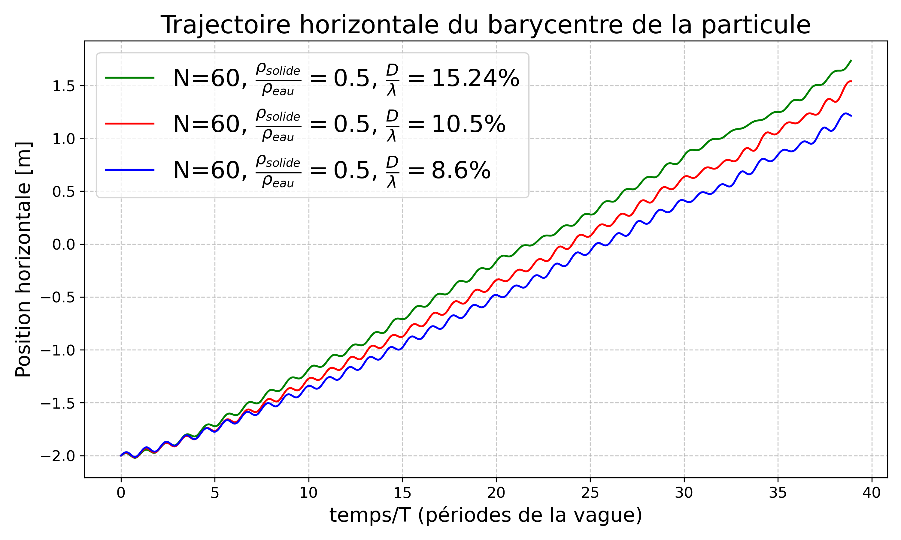
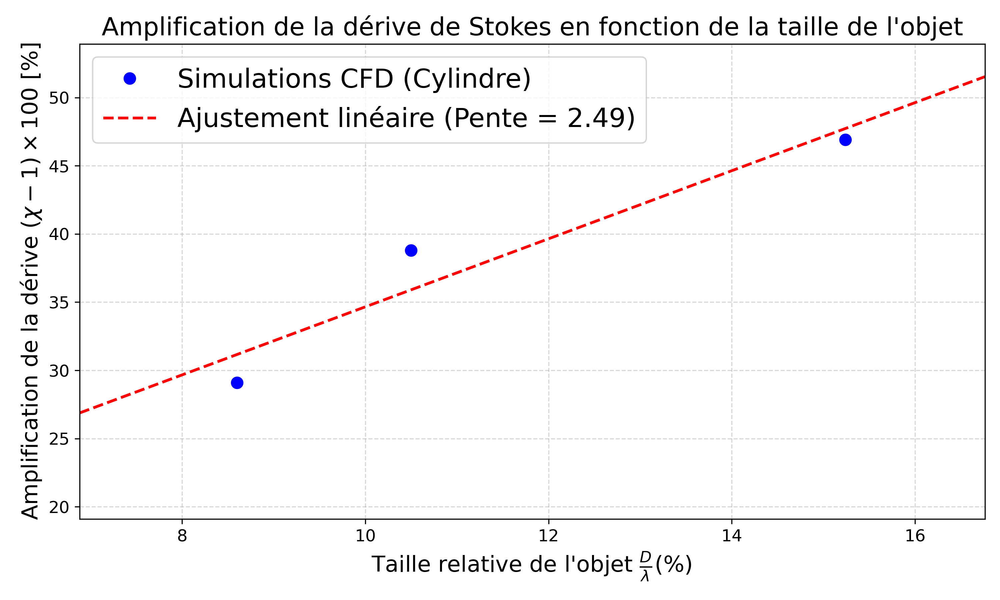
Paramétrage du solveur : Loi de mélange, viscosité pénalisante et maillage convergés
Implémentation et validation d’une vague de Stokes
Calcul de la dérive d’un objet flottant de taille finie
Valider la dérive par des expériences en canal ou des simulations CFD de référence
Étudier l’influence de la densité de l’objet sur la dérive
Étendre l’étude à des géométries plus réalistes (formes de déchets plastiques)
Étendre l’étude en 3D